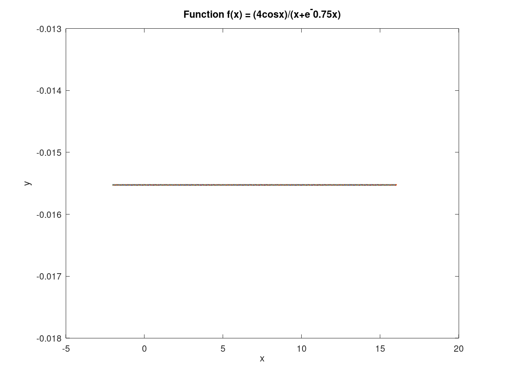
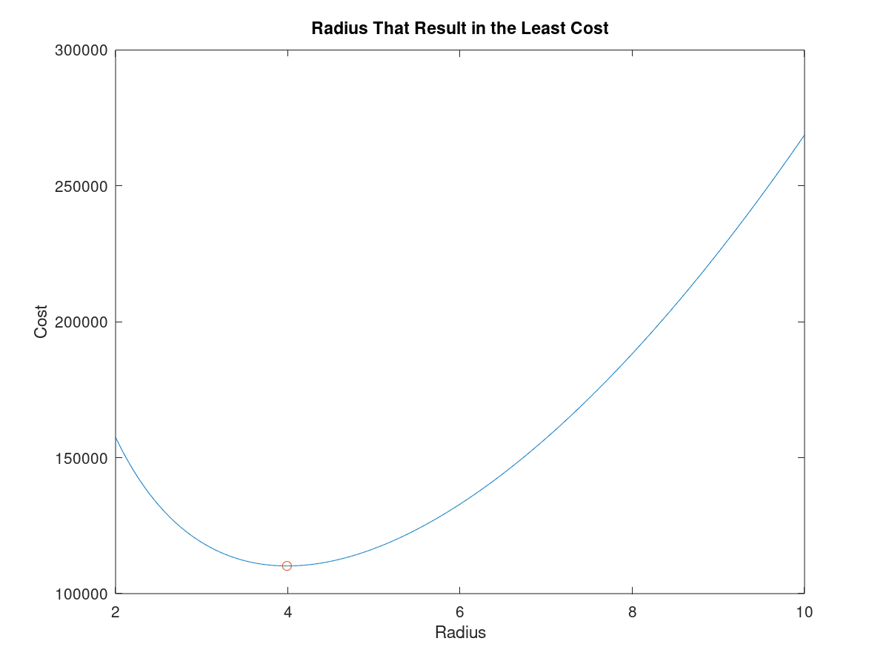

Authored by: Andres Choque Authored on: 9/18/2020
clear close all clc %{ Given the matrices A = [9 6 ; 2 7] and B = [8, 9 ; 6, 2] do the following by hand, then check your answer using MATLAB. a. Find the sum of A and B. b. Find the array product w = A. * B. c. Find the array product z = B.*A. is z = w? %} % Pseudocode % Initialize variables % Evaluate a % Evaluate b % Evalutae c % Compare z and w % Display the results % Initialize variables A = [9, 6 ; 2, 7]; B = [8, 9 ; 6, 2]; % Evaluate a a = A + B; % Evaluate b w = A.*B; % Evalutae c z = B.*A; % Compare z and w % according to the results z and w both equal to [72, 54; 12, 14] % Display the results disp('For problem 2.13 the answers are diplayed here: '), a, w, z disp('') disp('according to the results z and w both equal to [72, 54; 12, 14]')
For problem 2.13 the answers are diplayed here:
a =
17 15
8 9
w =
72 54
12 14
z =
72 54
12 14
according to the results z and w both equal to [72, 54; 12, 14]
clear close all clc %{ Given the matrices A = [5, 9 ; 6, 2] and B = [4,7 ; 2, 8] do the following by hand, then check your answers using MATLAB. a. Find the array quotient C = A./B b. Find the array quotient D = B./A. c. Find the quotient E = A.\B. d. Find the array quotient F = B.\A. e. Are any of the C,B,E or F equal? %} % Pseudocode % Initialize variables % Evaluate a % Evaluate b % Evalutae c % Evaluate d % Compare C,D,E, and F % Display the results % Initialize variables A = [5, 9; 6, 2]; B = [4, 7; 2, 8]; % Evaluate a C = A./B; % Evaluate b D = B./A; % Evalutae c E = A.\B; % Evaluate d F = B.\A; % Compare C,D,E, and F % According to the results C and F are the same while D and E are the same % Display the results disp('For problem 2.16 the answers are the following: '), C, D, E, F disp('') disp('According to the data C and F are the same while D and E are the same') disp('')
For problem 2.16 the answers are the following: C = 1.25000 1.28571 3.00000 0.25000 D = 0.80000 0.77778 0.33333 4.00000 E = 0.80000 0.77778 0.33333 4.00000 F = 1.25000 1.28571 3.00000 0.25000 According to the data C and F are the same while D and E are the same
clear close all clc %{ Plot the following function for x over the interval -2 <= x <= 16 f(x) = (4cosx)/(x+e^-0.75x) Use enough points to get a smooth curve. %} % Pseudocode % Initialize variables % Generate plot % Initialize variables x = [-2:0.01:16]; y = (4*cos(x))/(x + exp(-0.75*x)); % Generate plot plot(x,y), xlabel('x'), ylabel('y'), title('Function f(x) = (4cosx)/(x+e^-0.75x)')
clear close all clc %{ Two divers start at the surface and establish the following coordinate system: x is to the west, y is to the north, and z is down. Diver 1 swims 60 ft east, then 25 ft south, and then dives 30 ft. At the same time, diver 2 dives 20 ft, swims east 30 ft, and then south 55 ft. a. compute the distance between diver 1 and the starting point. b. How far in each direction must diver 1 swim to reach diver 2? c. How far in a straight line must diver 1 swim to reach diver 2? %} % Pseudocode % Initialize variables % Compute the distance between diver 1 and the starting point % Calculate the distance in each direction diver 1 needs to reach diver 2 % Calculate the distance in a straight line to catch up to diver 2 % Display the results % Initialize variables divr1 = [-60, -25, 30]; divr2 = [-30, -55, 20]; % Compute the distance between diver 1 and the starting point d = sqrt((divr1(1)-divr2(1))^2 + (divr1(2)-divr2(2))^2 + (divr1(3)-divr2(3))^2); % Calculate the distance in each direction diver 1 needs to reach diver 2 x = divr2(1) - divr1(1); % represent east direction y = divr2(2) - divr1(2); % represent south direction z = divr2(3) - divr1(3); % represent north direction % Calculate the distance in a straight line to catch up to diver 2 % this is the same value as part a % sum(x,y,z) % Display the results disp('For problem 2.26 the diver 1 travels in d distance of (ft): '), d disp('') disp('Diver 1 travels in the following values for each direction: '), x,y,z disp('') disp('Therefore the distance in a straight line diver 1 must swim is: '), d disp('')
For problem 2.26 the diver 1 travels in d distance of (ft): d = 43.589 Diver 1 travels in the following values for each direction: x = 30 y = -30 z = -10 Therefore the distance in a straight line diver 1 must swim is: d = 43.589
clear close all clc %{ A water tank consists of a cylindrical part of radius r and height h, and a hemispherical top. The tank is to be constructed to hold 500m^3 of fluid when filled. The surface area of the cylindrical part is 2 pi r h, and its volume is pi r^2 h. The surface area of the hemispherical top is given by 2 pi r^2, and its volume is given by 2 pi r^3/3. The cost to construct the cylindrical part of the tank is $300/m^2 of surface area; the hemispherical part costs $400/m^2. Plot the cost versus r for 2 <= r <= 10 m, and determine the radius that results in the least cost. Compute the corresponding height h. %} % Pseudocode % Initialize variables % Determine the height h % Calculate the cost of the hemisphere % Calculate the cost of the cylinder % Calculate the total cost % Determine the minimum value for cost and index % Plot the data % Display the results % Initialize variables V = 500; % V represents volume R = [2:0.01:10]; % R represents range % V = pi*R^2*h + 2/3*pi*R^2 this represents the equation for volume % Determine the height h h = (V- 2./3.*pi.*R.^2)./(pi.*R.^2); % Calculate the cost of the hemispherical part Cost_s = 400*(2.*pi.*R.^2); % Calculate the cost of the cylinder Cost_c = 300*(2.*pi.*R.*h); % Calculate the total cost Cost_tot = Cost_s + Cost_c; % Determine the minimum value for cost and index [minCost_tot, index] = min(Cost_tot); R(index); Cost_tot(index); % Plot the data plot(R, Cost_tot, R(index), minCost_tot,'o'), xlabel('Radius'), ylabel('Cost') title('Radius That Result in the Least Cost') % Display the results disp('For problem 2.30 the minimum cost is: '), Cost_tot(index) disp('') disp('radius with the least cost is: '), R(index) disp('')
For problem 2.30 the minimum cost is: ans = 110185.56341 radius with the least cost is: ans = 3.9900